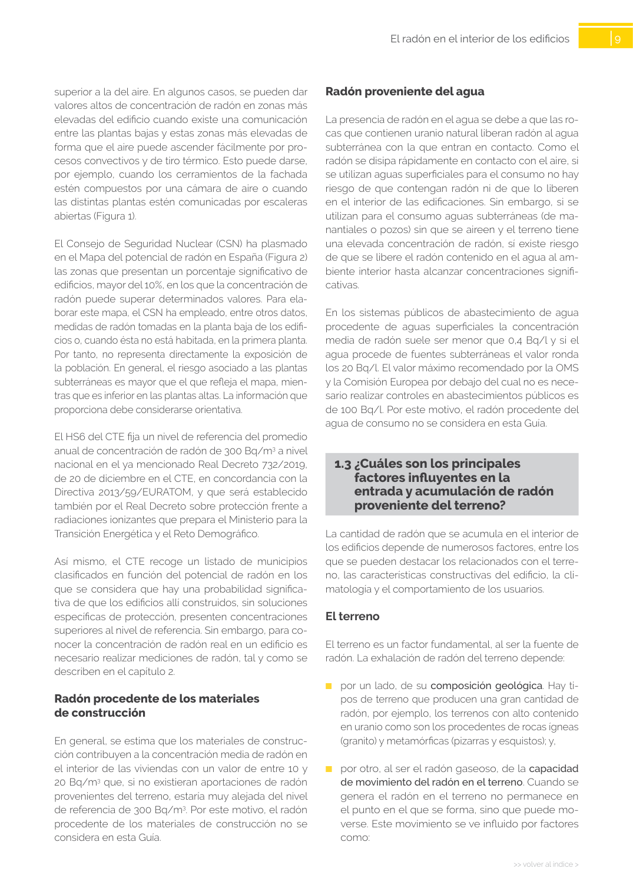

GUIA · El terreno · versión sin-fecha · capa guia
Formatos: JSON compacto · Markdown · PDF fuente
Ámbito del documento · texto del ámbito · documento y tablas
Tipo: tablas, figuras · nivel 3 · sección estimada: 8 escalera abierta · padre: a0025
El terreno El terreno es un factor fundamental, al ser la fuente de radón. La exhalación de radón del terreno depende: ■ por un lado, de su composición geológica. Hay ti pos de terreno que producen una gran cantidad de radón, por ejemplo, los terrenos con alto contenido en uranio como son los procedentes de rocas ígneas (granito) y metamórficas (pizarras y esquistos); y, ■ por otro, al ser el radón gaseoso, de la capacidad de movimiento del radón en el terreno. Cuando se genera el radón en el terreno no permanece en el punto en el que se forma, sino que puede mo verse. Este movimiento se ve influido por factores como: 10 >> volver al índice > El radón en el interior de los edificios Figura 4 - Influencia del grado de saturación de agua del terreno ■ la permeabilidad a los gases de la envolven te: cuanto más permeable sea el cerramiento, por ejemplo, por encontrarse deteriorado con fisuras o grietas o porque esté constituido por un forjado de madera, más sencillo será para el gas radón atrave sarlo y penetrar en el edificio; ■ el tipo de solución constructiva de las distintas componentes de la envolvente: cuantos más obs táculos haya en el camino de entrada del gas, más difícil será que penetre en el edificio (Figura 6). Por ejemplo, si el edificio cuenta con una cámara sanita ria, supondrá un obstáculo al paso del gas; ■ las instalaciones u otros elementos que pasen a través de la envolvente y rompan su homogeneidad permitiendo así el paso del gas en estos puntos, por ejemplo, la presencia de una bajante que atraviese la solera; ■ la comunicación entre los sótanos y las plantas habitables pueden posibilitar el desplazamiento del gas de las zonas bajas por donde penetra y su acu mulación en las zonas altas habitables. En estos ca sos, por ejemplo, la existencia de puertas estancas dificultará el paso del gas; ■ el sistema de ventilación, que puede tener un efec to beneficioso o perjudicial. En la mayoría de casos - la permeabilidad al aire del terreno: a mayor per meabilidad, mayor facilidad de movimiento (Figura 3). Así, por ejemplo, en macizos rocosos sin frac turar, aunque la concentración de radón sea alta, será difícil que escape de la roca, mientras que en terrenos fracturados el radón se moverá más rápi damente alcanzando el exterior o la envolvente de los edificios con mayor facilidad; Figura 3 – Permeabilidad al aire según el terreno - el grado de saturación de agua del terreno: a mayor saturación, menor facilidad de movimiento pues el agua contenida en el terreno presenta un coeficien te de difusión inferior al del aire y retiene los gases (Figura 4). Si todo el terreno debajo de un edificio tiene un grado de saturación de agua similar, el efecto es favorable para la protección frente al ra dón. Sin embargo, si el grado de saturación es he terogéneo, por ejemplo, cuando la capa superficial del terreno circundante de un edificio está saturada de agua por la lluvia, pero debajo de la edificación el terreno permanece seco, el efecto es desfavora ble al dificultarse la salida de radón al exterior por lo que tiende a aumentar su entrada al edificio.

PDF fuente redistribuible: copia fiel enlazada en esta página (SHA256 verificado).